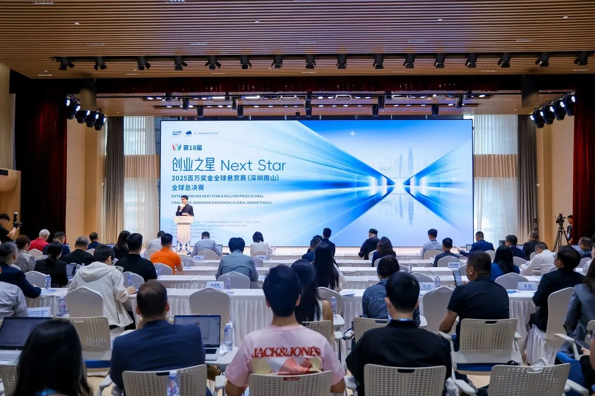
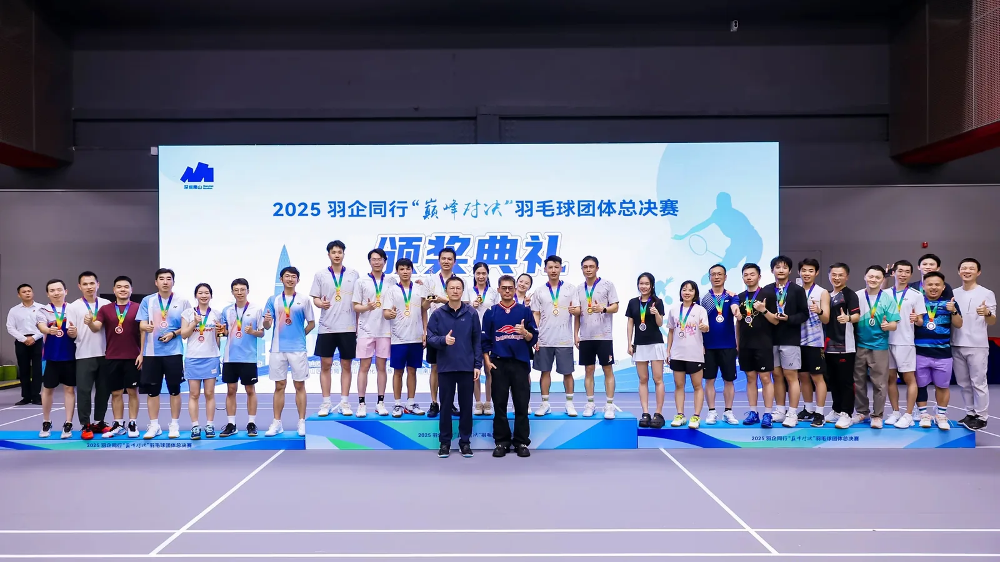
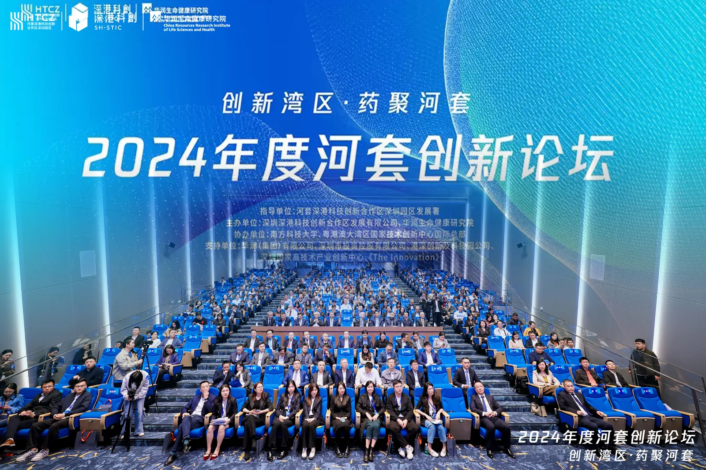

01 / NEXT STAR创业之星AI SCORE SYSTEMHI, I'M NENGJUN
A PROJECT OPERATOR
USING AI TO TURN
COMPLEXITY INTO DELIVERY

02 / SPORTS × BUSINESS羽动南山GOV × ENTERPRISE
03 / HETAO创新论坛FORUM DELIVERYAIGC MOTION / 2026
Moving
images
从角色、世界观到镜头语言，我用 AI 完成视觉设定与动态叙事。横屏保持电影画幅，竖屏保留移动内容的原生节奏。
LANDSCAPE FILM · 16:9 · FULL CUT日系动漫风格
AI 动画 / 世界观 / 镜头叙事
PORTRAIT FILM · 9:16 · FULL CUT奶龙短片
角色演绎 / 社交内容
FULL MOTION ARCHIVE / 2026
All cuts.
All cuts.
All stories.
04MORE FILMS
完整收录
06 COMPLETE FILMSLANDSCAPE + PORTRAITORIGINAL RATIOWEB READY
About me
我是蔡能均。我站在业务、资源与技术的交界处，把复杂项目拆解为可执行的动作。从招投标、供应商管理、多会场总控，到 AI Agent、智能评分与自动化工作流，我关注的不只是方案，而是结果是否真正发生。
Let's workCapabilities
项目全周期交付
从立项、招投标与三方比价，到人员矩阵、动线规划、彩排和现场风控，把复杂项目稳定推向交付。
AI 数字化运营
使用 Codex、GPT、Coze、n8n、Docker 与飞书接口，从 0 到 1 搭建 AI Agent 和自动化业务流。
政企资源协同
连接政府部门、企业高管、协会、网络达人和 MCN，让资源在正确的业务场景里形成有效合作。
高规格现场总控
面对跨区域、多会场、VIP 嘉宾和高关注度场景，建立执行 SOP，并对突发情况进行现场决策。
Projects
痛难点分析
- 全球云路演与多会场协同，评分链路复杂
- 决赛节点密集，实时汇总与容错要求高
解决方法
- 从 0 到 1 搭建智能评分与排名汇总系统
- 用统一 SOP、彩排和总控机制稳定交付
NEXT
STAR 2025 / NANSHAN
STAR 2025 / NANSHAN
痛难点分析
- 政府、企业、嘉宾与参赛者多角色并行
- VIP 接待、赛事执行与商务交流相互交织
解决方法
- 建立人员矩阵、分层流程与关键节点预案
- 串联政府、高管和产业资源形成有效合作
羽动
南山 2025 / SHENZHEN
南山 2025 / SHENZHEN
痛难点分析
- 招投标、供应商和现场执行需要全程合规
- 多方排期、嘉宾动线与会场调度高度耦合
解决方法
- 以三方比价、责任矩阵和里程碑控制进度
- 提前推演动线，现场总控统一调度
创新湾区
药聚河套 2024 / HETAO
药聚河套 2024 / HETAO
痛难点分析
- 传统企业主缺少直播运营方法与组织经验
- 招募、培训、社群和结课后运营链路较长
解决方法
- 搭建招募—课程—复盘的项目闭环
- 建立班委会与私域 SOP，推动社群自主运行
网络主播班 2023 / BAO'AN
CAREER PATH / 2019 — NOW
Journey
从音乐与资源拓展出发，走进政务项目、门店创业与产业服务，再把 AI 自动化接入真实业务。我不是沿着单一路径前进，而是持续扩展解决问题的边界。
深圳市战略性新兴产业发展促进会
项目支持 & AI 数字化运营
深圳市宝安区幻卡休闲屋
联合创始人
中共深圳市宝安区委统战部
办事员
TME 腾讯音乐集团
QQ 音乐拓展新星 · 实习
深圳大学
金融学本科
TOOLKIT
CodexGPTGeminiCoze
n8nDocker飞书 APINotebookLM
Microsoft OfficePremiere Pro